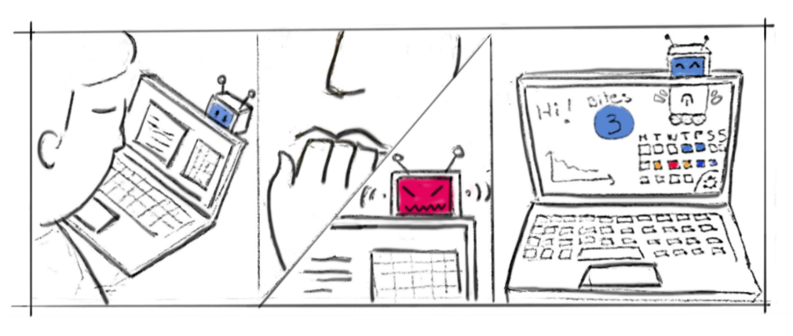
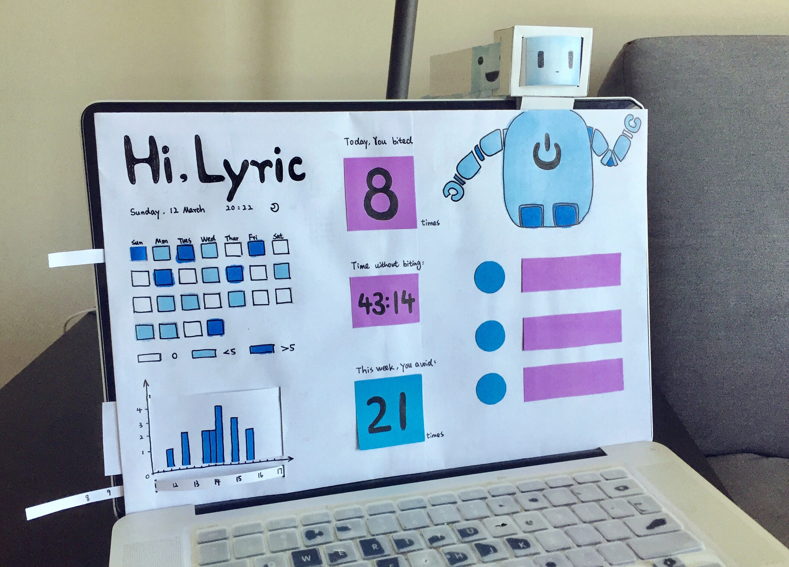
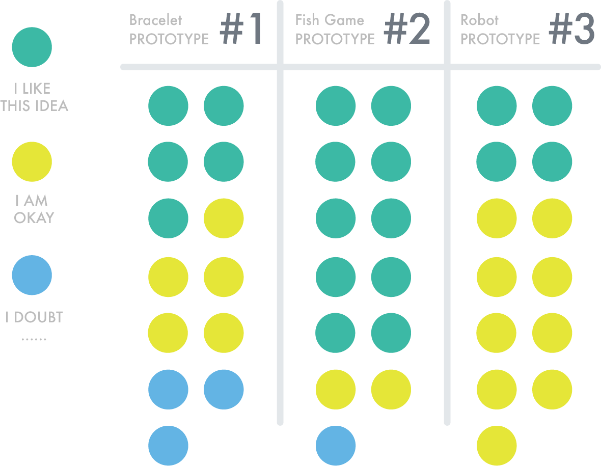
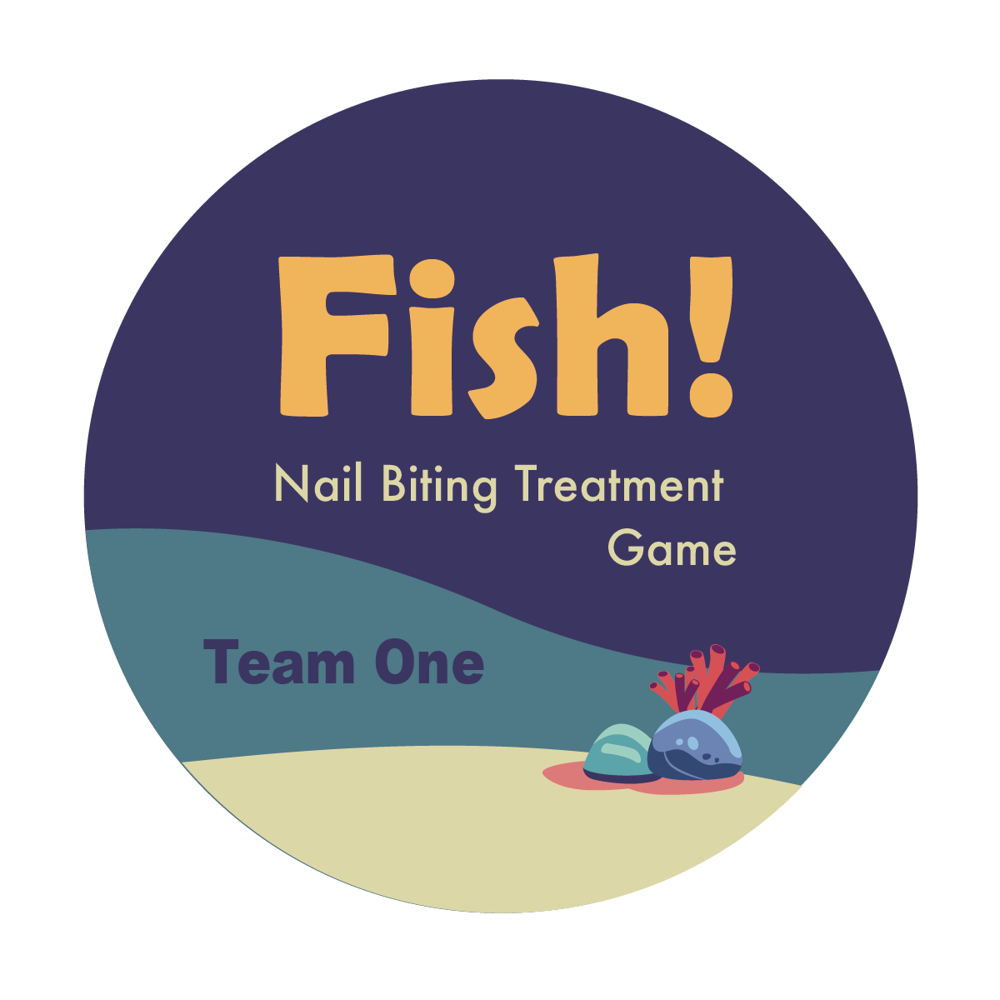
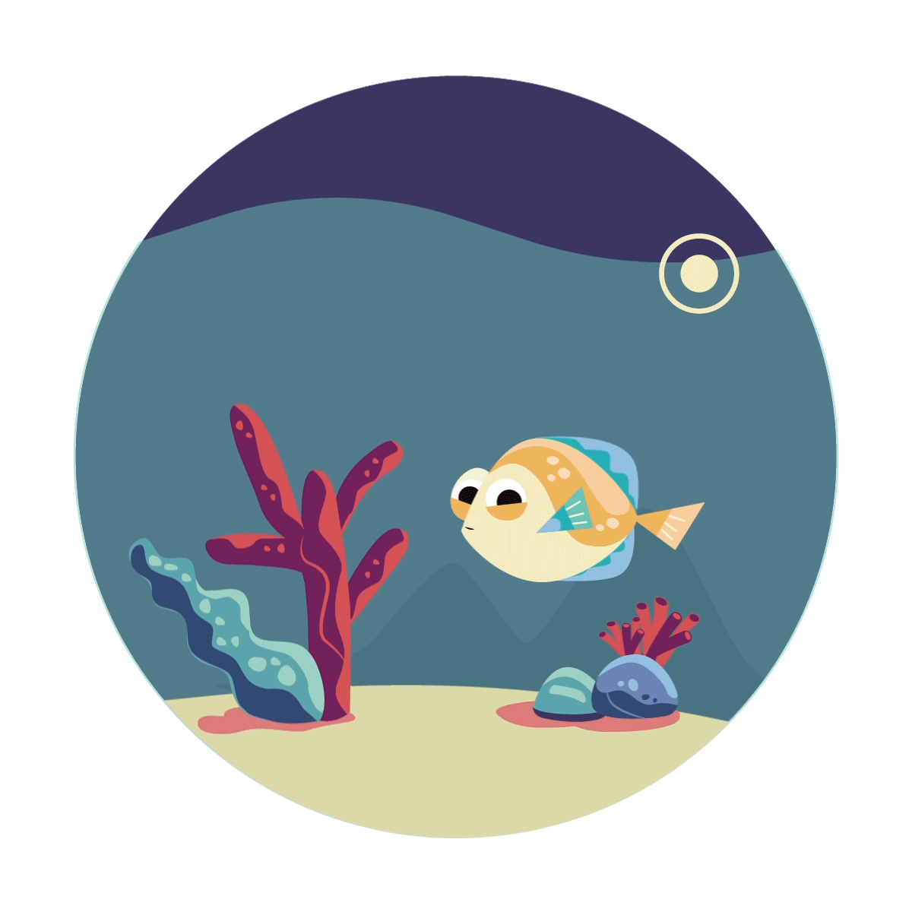
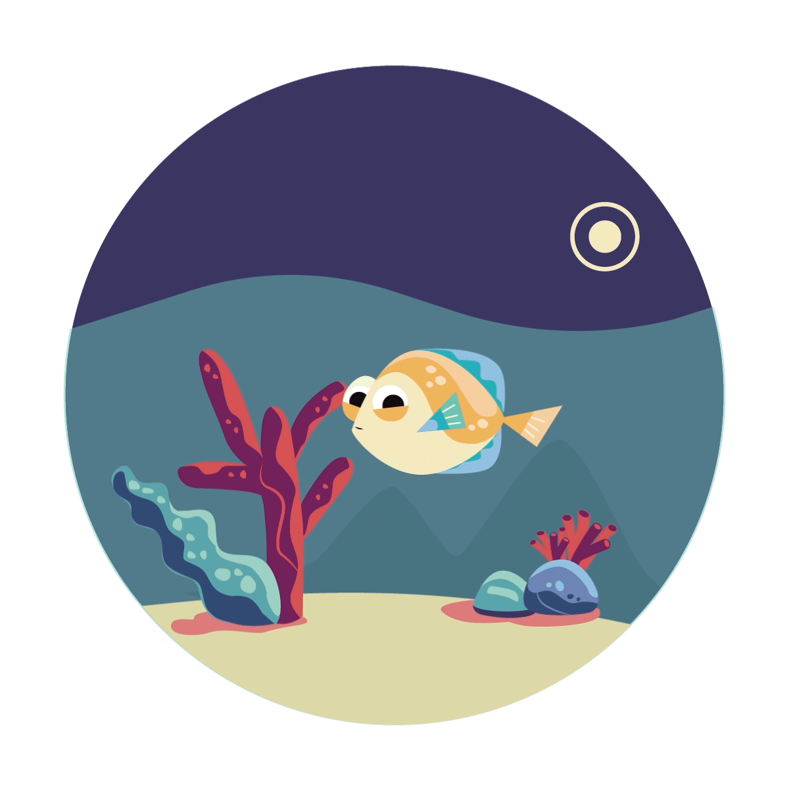
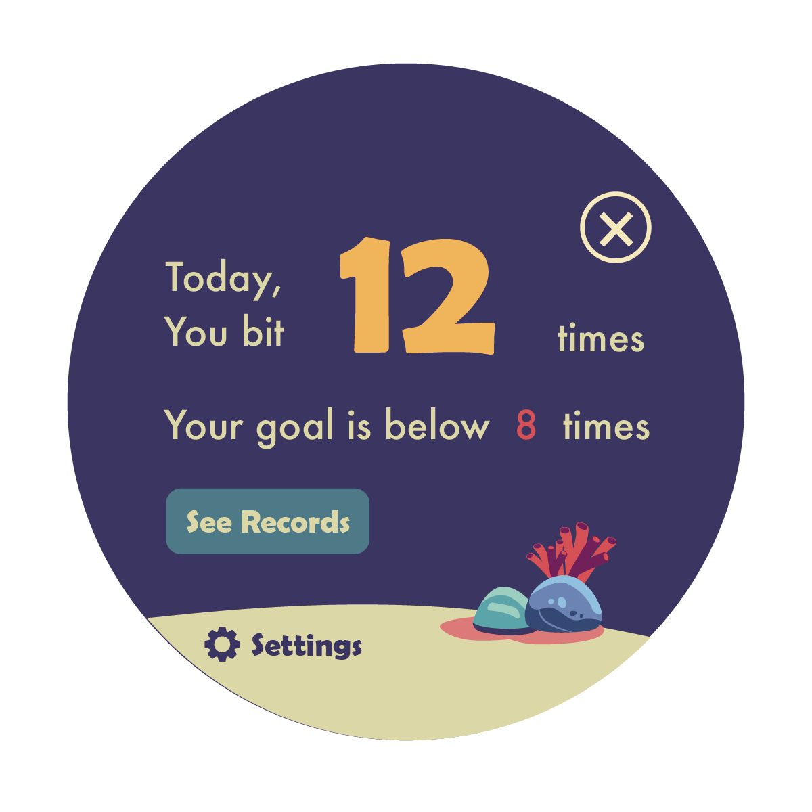
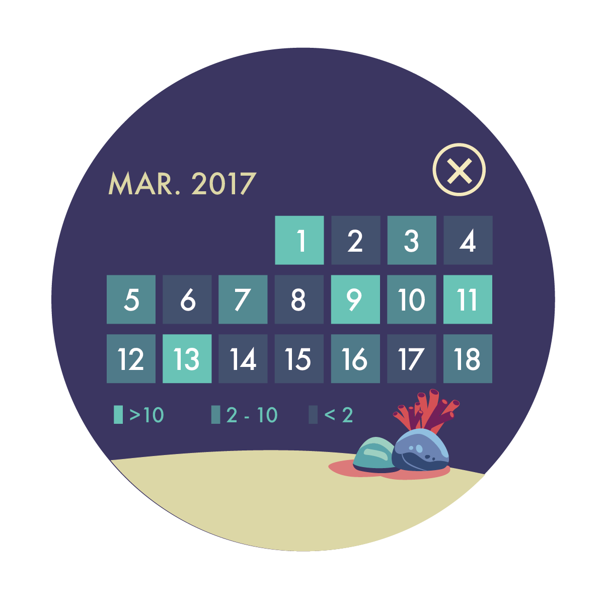
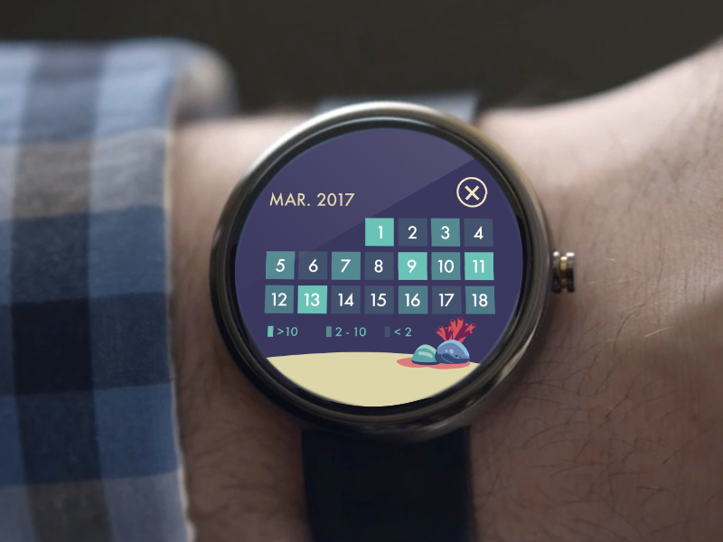
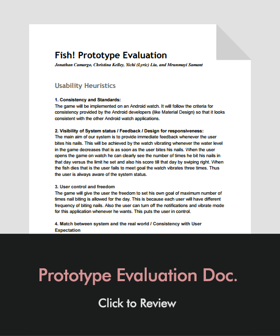

TEAM MEMBERS
Jonathan Camargo | Lyric Liu
Christina Kelley | Mrunmayi Samant
Fish! is an a gamified smart watch application for nail-biting avoidance.
Our project aims to identify the most common nervous habits that college students suffer from and propose a solution to help them prevent and avoid these habits.
MY ROLE
During the research phase, I took charge in creating the survey and doing ethnographic study. After that, I drew the storyboard of the scenario. I participated throughout the research reflection and helped come up with three possible ideas.Furthermore, I created one low-fidelity prototype and did the user test with my group members. At last, I made illustrations and animations to finalize our the high-fidelity game prototype based on our user feedback.
MOTIVATION
A nervous habit is any repetitive movement or vocalization that a person may perform unconsciously when he or she is nervous or stressed. Nervous habits are repetitive behaviors or unwanted habit actions that can produce self-harming. These conditions trigger during stressful situations and most of the time are unconscious, making the person unable to control their execution. Nervous habits are highly correlated with anxiety, stress, and obsessive-compulsive disorder . One of the more prevalent traits is nail tic disorders; according to Singal, “they are examples of body-focused repetitive behaviors in which there is an irresistible urge or impulse to perform a certain behavior. The behavior is reinforced as it results in some degree of relief and pleasure ”. In extreme cases, nervous habits can qualify as a disorder , but even in non-clinical cases these habits can be problematic for one’s health, career, and day-to-day interactions.
TARGET USERS
Nervous habits are very common, especially in adolescent and young adult populations. In a 1990 study of “purposeless habits” in college students, 63% of respondents reported biting their nails and not a single respondent reported having no such habit .
We focus on students due to the prevalence of nervous habits in this population, and also to the frequent job-searching and interviewing that occurs. Nervous habits can be especially problematic in the workplace and in face-to-face job interviews ; people are often unaware of their own habits (making them hard to avoid or prevent), but interviewers may see them as signs of distraction or insecurity.
RESEARCH
SURVEY
To learn more about our users, we created and disseminated a survey on nervous habits with a combination of closed-format and open-format questions. Our goal was to identify the most common nervous habits, when they are most likely to occur, how students feel about them, and suggestions for prevention and avoidance. The survey allows to determine the perception of nervous habits in the user group to further select one in particular to be the focus or the project. Based on our survey result. We narrowed our nervous behavior to be nail biting which is an annoying habbit that bothers students.

OBSERVATION

We conducted four ethnographic observations with our target users. Observations were done to assess details in the nail biting process and to understand the work environment and the conditions around the user. During the observation, I kept track of the following things with specific time stamps: 1. The nail biting situation; 2. Nail biter’s awareness 3. Detailed behavior of nail biting; 4. Nail biter’s emotion. My notes include “His nail biting attempt was prevented when his companion talked to him suddenly”, “Most of the time he ended biting his nails for something else catches his attention”, etc.
AFFINITY DIAGRAM
We used affinity diagram to organize our ideas and data that collected from our observation, survey and interview. The pink notes consist of:
• Effects of nervous habits.
• This is how I feel when I bite my nails.
• Visual proof of the habit.
• This is who I am around when I do or do not bite my nails.
• This is when and where I bite my nails (Public vs. Private).
ANALYSIS
STORYBOARD
Student works at computer → student gets stressed out about a deadline or something similar → student stops working and bites nails → student returns to working (cyclical)
PERSONA
IMPLICATIONS
• People use their laptop most of the times for studying and working in assignments. This means we can use the laptop as a target device for our solution.
• Some users do not consider that nail biting is a problem that drastically affect their lives, but even if they think that, most of them are willing to try something to reduce it.
• The process of awareness is very important. We detected that people in very social environments are less inclined to bite their nails, so they tend to do it when they feel privacy, even if they are in public environments.
• People have different habits and processes of nail-biting; understanding the physical actions and the affiliated emotions (gleaned from the survey and from observation) will help us best tailor a design to fit user needs.
• Social environment is also very important: students’ feelings, stress, and habits are affected by their friends and others around them. This social context can be both helpful and harmful, depending on the person and the situation.
• We speculate that nail biting can be a way to release stress and anxiety tension. In fact, many survey respondents felt this way, and were interested in addressing the underlying problem of stress rather than just the resulting nervous habit.
• Since some users do not notice the behavior, they don’t realize how frequently they bite their nails and also they are not aware of it every time de do. Since it is something that is not consciously done, it is even harder to quantify by the user.
LOW - FIDELITY PROTOTYPE
PROTOTYPE #1
Our first prototype is a wearable bracelet, with colors and vibrations. It will give quick and instantaneous feedback with vibration whenever the accelerometer and related sensors note that you are in the process of biting your nails. It will also have a band that changes color throughout the day as you bite your nails more, to alert you to how many times that day you have bitten your nails. This combination of Pavlov-esque alert and Fitbit-esque tallying will allow the user to gain awareness about their nail-biting in the moment and track their success in avoiding it as they go about their day.
The storyboard explains the concept of the bracelet. A user starts the day with green color. When a nail biting episode occurs, the bracelet provides instant haptic feedback using a small vibration motor. The color of the bracelet shifts gradually to yellow and then red according to the recurrence of nail biting.
We constructed the prototype using a colored paper strip and a paper bracelet-look-alike strap. Attached to the bracelet joint we connected a vibration motor using magnet. A battery provided the power to the motor, and in order to emulate the instant feedback we used a switch to activate the vibration.
PROTOTYPE #2
Our second prototype is an Apple or Android watch app. It is a gamified application: you set your upper-limit goal of nail-biting (e.g., I want to bite my nails 10 or fewer times today), and--like the bracelet--the watch sensors note whenever you are biting in your nails. In this case, however, there is an application that gives you feedback and discourages nail-biting. In the goal-driven game, you have a fish in an aquarium. Every time you bite your nails, the water in the fish tank decreases. In order to keep your fish alive, you have to stay under your goal number of nail-bites! The aim here is to use caretaking and gamification to motivate the user to avoid biting their nails.The following storyboard summarizes the concept of the fish game/app.

PROTOTYPE #3
Our final prototype involves a desktop application, as well as a robot head that attaches to the top of your laptop. The application will use image processing to identify if and when you are biting your nails. The physical robot has a face that will give instantaneous feedback based on your nail-biting and lack thereof: a happy face when you aren’t biting your nails, a sad face when you do, and an (adorable) angry face when you continue nail-biting. The accompanying dashboard will house the robot’s virtual body, as well as graphs of your nail-biting over the day/week/month, plus a counter of how many times you have bitten your nails today and how long it has been since you last bit your nails. This combination of instant feedback and historical data will alert you of nail-biting in the moment and hopefully also give you information about when you are most likely to bite your nails, how often you do it, etc. A use case of the desktop application is illustrated in the storyboard below:
 We built a paper prototype using paper and cardboard to create the experience of the application concept: the paper dashboard is stood against a laptop to represent the screen view, and a robot head is temporarily mounted atop it, as per the image below. We draw different emotions in the facial expressions of the robot and included dynamic labels to show the statistics.
USER TEST
IN-CLASS FEEDBACK
We went into the class activity expecting people to like the robot design the best. This is because the desktop application could most conceivably detect the user biting his nails using image processing. Also, we felt that using a cute robot face and various data analytics on past nail biting pattern would be interesting to people. This was a clear example of our own favorites and biases impacting our thoughts on what others might think, as we all preferred the robot design and expected others to do so as well. However, we are very glad to have gotten so much feedback-- as people were most interested in the gamified fish app! They felt that a simple fish game on a watch would be more fun and more motivating, and would provide more immediate and useful feedback as we may not always sit in front of a laptop when we are biting nails.
ADDITIONAL FEEDBACK
After the in-class section, we spoke with three members of our target population to gather additional feedback and insight into our three initial paper prototypes.
The users expressed interest in something “simple” that would allow them to quickly/easily see their nail-biting habits. One user was very interested in the historical data that the robot app would allow, but others felt that they wouldn’t look at this data and that less information was better in this case. One user also noted that wearing an additional item on the wrist would not be an issue for them. Another thought all three prototypes did a good job encouraging avoidance, explaining that the fish in particular could be a useful way of motivating people due to the fact that you are now “responsible” for something else (in this case the fish), which might help one make changes that they wouldn’t make simply for themselves. The fish game and bracelet were preferred by two of the users, while one preferred the robot app. Overall, most of the feedback was positive or constructive and generally in line with the feedback we received in class.
After taking notes on all of this feedback from in and outside of class, and discussing these notes as a team, we came to a conclusion on prototype #3 to expand on.
HIGH-FIDELITY PROTOTYPE
THE FISH APP INTERFACE
    (A)
(B)
(C)
(D)
(E)
(F)
The next iteration of our selected prototype is an improved version of the fish application, which will be run on an Android watch. The screenshots above outline the typical use case. First, the user opens the application and views the intro screen (A). Then, they begin running the application; the fish swims happily around the screen (B), and the app continues to run in the background. When the sensors indicate that you are biting your nails, you see a warning and feel a vibration, and the water level in the fish tank begins to fall (C). If you continue biting your nails past your goal limit, the water level continues to drop until there is no longer any water left in the tank and the fish dies (D). You can view or change your goal, and view your daily nail-biting, in the settings screen (E), and from there you can also navigate to a monthly overview of your experience with nail-biting and the app (F).
We made a few improvements to our original design to settle on this one, based on the previously explained user feedback. Adding the vibration feature allowed us to leverage some of the strengths of the bracelet prototype; users really liked the vibration feature there and the immediate feedback and nail-biting discouragement that would come from it. Adding the calendar/review functionality likewise allowed us to incorporate strengths of the robot design: this data review feature is subtle and hidden, so easily ignored by those who aren’t interested, but it is also present for those who wish to track their progress or see how they are doing over time. Overall, this prototype best fits our users’ needs and has improved throughout the iteration process as we respond to and incorporate user feedback. The combination of positive and negative reinforcement will motivate the user, the presence of both immediate and historical feedback will allow for multiple layers of awareness to nail-biting, the aesthetic and the simplicity will let the user go on with their daily lives but maintain background awareness with the app, and the interaction between gamification and tracking will combine to best encourage the user and keep them motivated and returning to the application.
DEMO VIDEO
EVALUATION
EVALUATION PLAN
We base the evaluation of our application on the following usability heuristics
• Consistency and Standards
• Visibility of System status / Feedback / Design for responsiveness
• User control and freedom
• Match between system and the real world / Consistency with User Expectation
• Error prevention
• Recognition rather than recall
• Flexibility and efficiency of use / Universal usability
• Aesthetic and minimalist design / Simplicity
• Help users recognize, diagnose, and recover from errors / Reversible actions
• Help and documentation
The usability metrics that are relevant to our system are: Task Performance metrics, Issue-based metrics and Self-reported metrics.
Click the right image to see detailed evaluation doc.